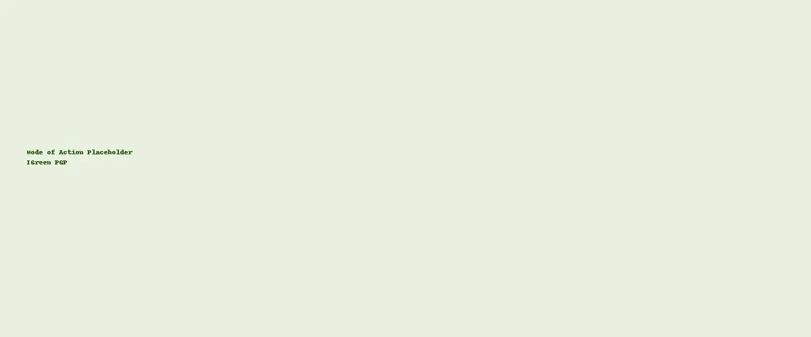

Biofertilizers
Bacillus Duo — Plant Growth Promotion
IGreen PGP features Bacillus velezensis and B. licheniformis, two complementary PGPR that stimulate rooting, improve nutrient uptake and help plants cope with stress. Ideal for vegetables, fruits and plantations seeking consistent establishment and growth.
| Variant | Formulation | Consortium | Primary Functions |
|---|---|---|---|
| IGreen PGP — SL | Solution (SL) | B. velezensis, B. licheniformis | Rooting, nutrient uptake, vigor |
| IGreen PGP — WP | Wettable Powder (WP) | Same consortium | Seed & soil applications |
| Application | Variant | Rate | Notes |
|---|---|---|---|
| Seed treatment | SL / WP | Per regional label | Uniform application; shade‑dry if required. |
| Transplant drench | SL | Per regional label | Apply to root zone at planting. |
| In‑furrow | WP | Per regional label | Place near seed for rapid colonization. |
Reference only. Follow locally approved labels and directions.

Dense root systems for uptake.
Better access to soil nutrients.
Supports plants under abiotic stress.
SL/WP options to fit practice.
Documented lots and viability.
PGPR colonization → biochemical signaling & enzyme outputs → nutrient uptake & root growth.
